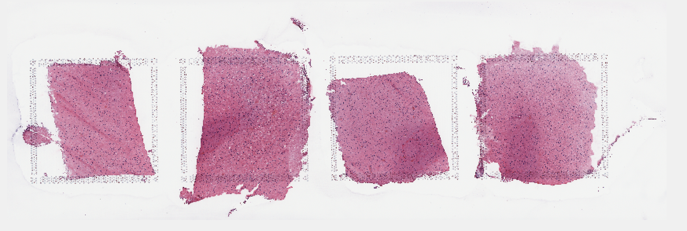
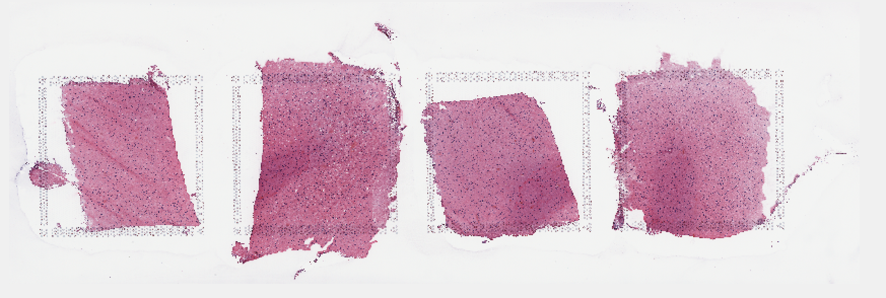

1 Step 1: Split Visium histology whole slide image into individual capture area images
The visium histology whole slide image from the imaging system (slide scanner) is a multiplane tif image (~20GB). The sample image Lieber_Institute_OTS-20-7690_rush_anterior.tif from the DLPFC dataset is used here to run through the pipeline.
The inputs to the function splitSlide.m are
- the full path with file name of the raw multiplane tif image (obtained from slide scanner)
The function imports the raw multiplane tif image and saves each plane/image as MATLAB structure and all structures are saved into a single cell array (I) in a ‘.mat file’. The 1st image of the raw multiplane tif is the raw visium histology slide image, the remaining planes/images consists of the metadata.
The function then splits the 1st image of the multiplane tif into individual capture areas (A1,B1,C1,D1) and saves them as both tif images and mat files. The capture areas are resized to 70% of the original size (eg 100 X 100 Pixel region is resized to 70 X 70 pixel region) when saving to tif images as MATLAB cannot store images that occupies more than 2^32 - 1 bytes of data.
>> fname = '/path_to_multiplane_tif/Lieber_Institute_OTS-20-7690_rush_anterior.tif';
>> splitSlide(fname)
The multiplane tif has 7 images
Starting parallel pool (parpool) using the 'local' profile ...
Imported image 7 of the multiplane tif
Elapsed time is 0.066238 seconds.
Imported image 6 of the multiplane tif
Elapsed time is 0.031950 seconds.
Imported image 5 of the multiplane tif
Elapsed time is 0.113162 seconds.
Imported image 4 of the multiplane tif
Elapsed time is 0.652994 seconds.
Imported image 3 of the multiplane tif
Elapsed time is 10.672578 seconds.
Imported image 2 of the multiplane tif
Elapsed time is 0.009990 seconds.
Imported image 1 of the multiplane tif
Elapsed time is 169.230220 seconds.
Saving the multiplane tif to mat file
Elapsed time is 1071.624948 seconds.
Splitting whole slide into individual capture areas
Elapsed time is 1672.725408 seconds.The 7 images of the multiplane tif are shown below.

 
 


Though most of the images look same, the first image in the multiplane tif is the high resolution image of the slide based on the image size (y,x,z) in pixels shown below in MATLAB.
load('/path_to_multiplane_tif/Lieber_Institute_OTS-20-7748_rush_posterior.mat')
size(I,2) %number of images in the multiplane tif
size(I{1}.image)
ans =
53384 160858 3
size(I{2}.image)
ans =
339 1024 3
size(I{3}.image)
ans =
13346 40214 3
size(I{4}.image)
ans =
3336 10053 3
size(I{5}.image)
ans =
834 2513 3
size(I{6}.image)
ans =
777 765 3
size(I{7}.image)
ans =
612 1600 3The image ‘I{1}.image’ is split into 4 sub images or capture areas by dividing the x(160858) dimesion into 4 equal parts. Sometimes the center of the image is not the center of the slide, in such case the offset is adjusted manually.
Below are the output files of slpitSlide function
Lieber_Institute_OTS-20-7690_rush_anterior.mat - cell array of multiplane tif stored in mat file.
Lieber_Institute_OTS-20-7690_rush_anterior_A1.tif - tif image of compressed capture area A1.
Lieber_Institute_OTS-20-7690_rush_anterior_A1.mat - RGB matrix of uncompressed capture area A1 stored in mat file.
Lieber_Institute_OTS-20-7690_rush_anterior_B1.tif - tif image of compressed capture area B1.
Lieber_Institute_OTS-20-7690_rush_anterior_B1.mat - RGB matrix of uncompressed capture area B1 stored in mat file.
Lieber_Institute_OTS-20-7690_rush_anterior_C1.tif - tif image of compressed capture area C1.
Lieber_Institute_OTS-20-7690_rush_anterior_C1.mat - RGB matrix of uncompressed capture area C1 stored in mat file.
Lieber_Institute_OTS-20-7690_rush_anterior_D1.tif - tif image of compressed capture area D1.
Lieber_Institute_OTS-20-7690_rush_anterior_D1.mat - RGB matrix of uncompressed capture area D1 stored in mat file.